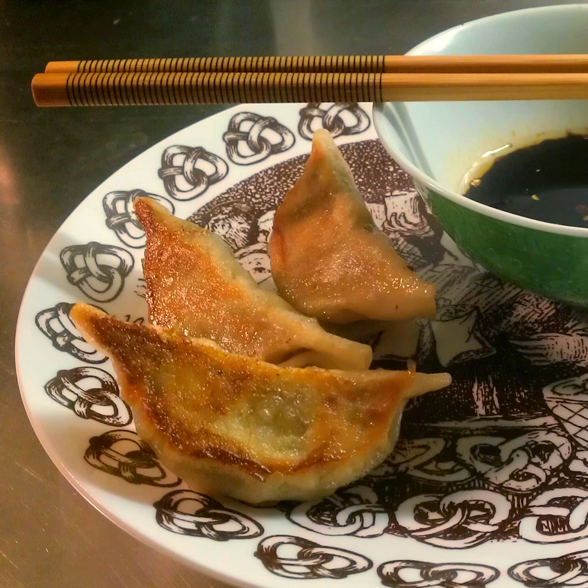
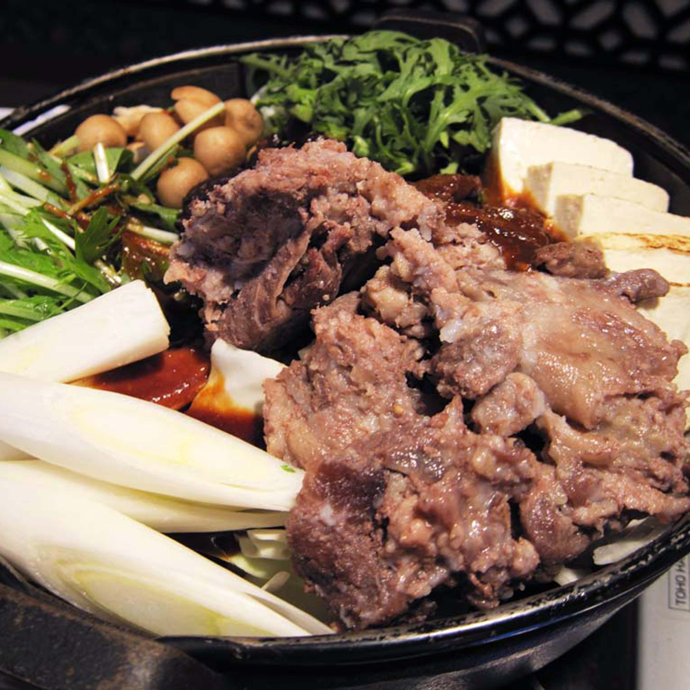
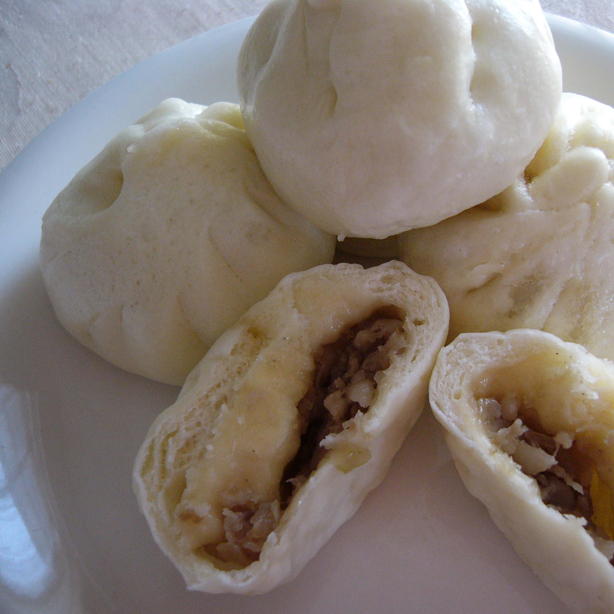
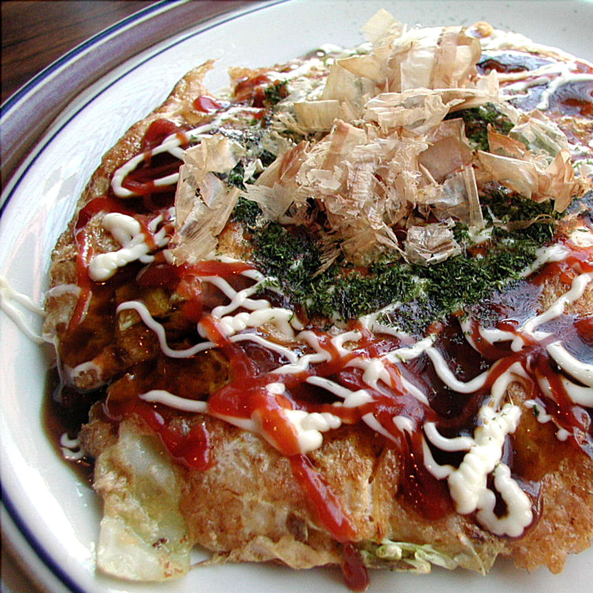
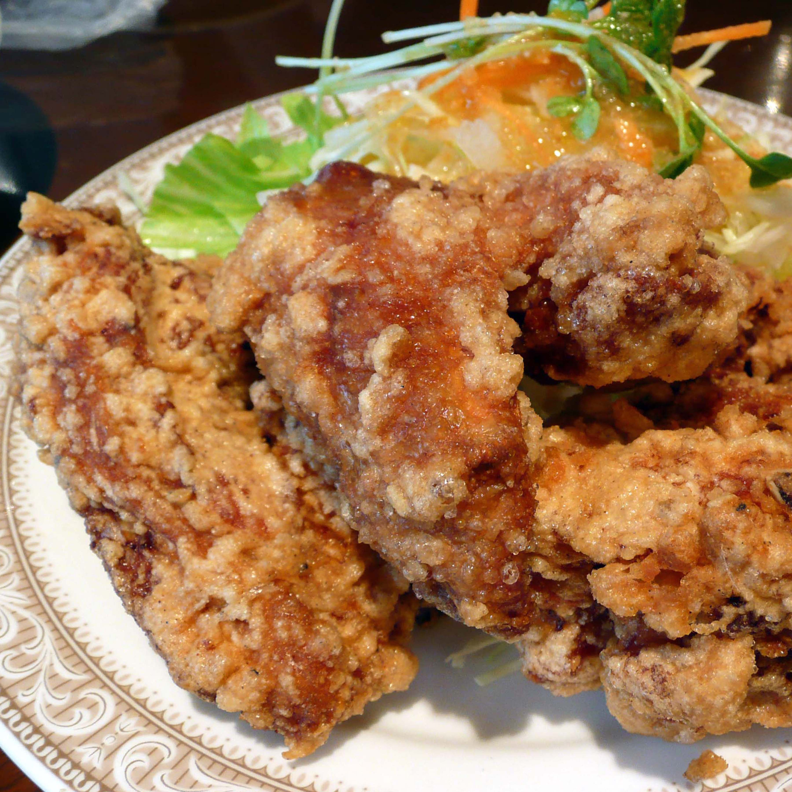
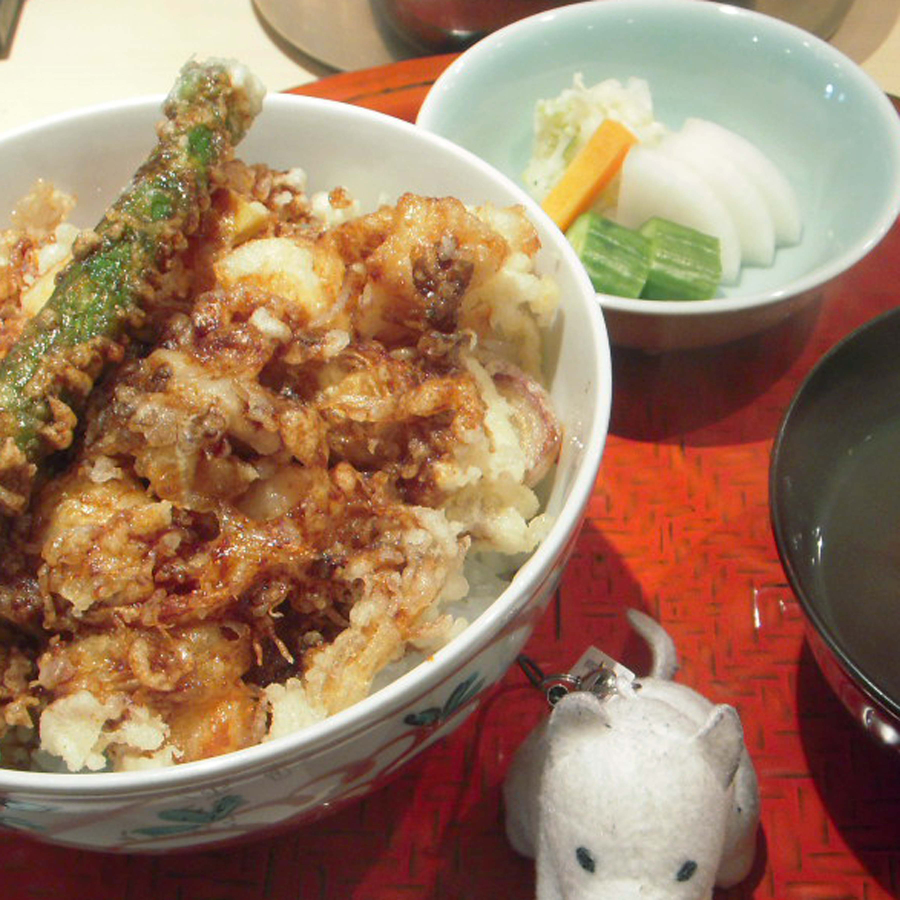
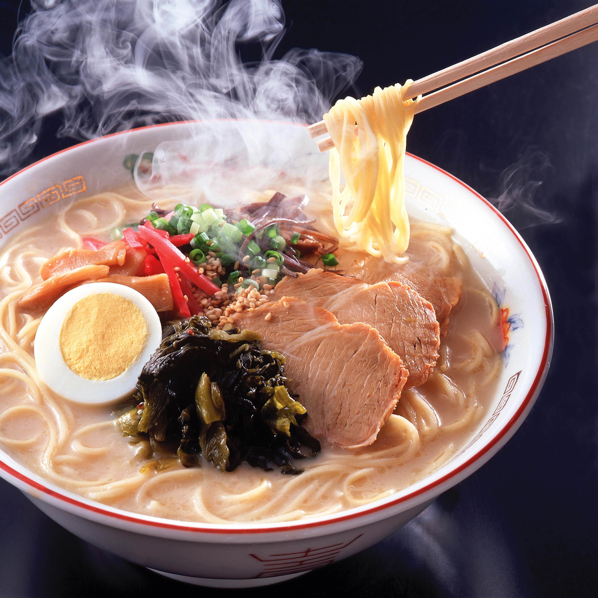
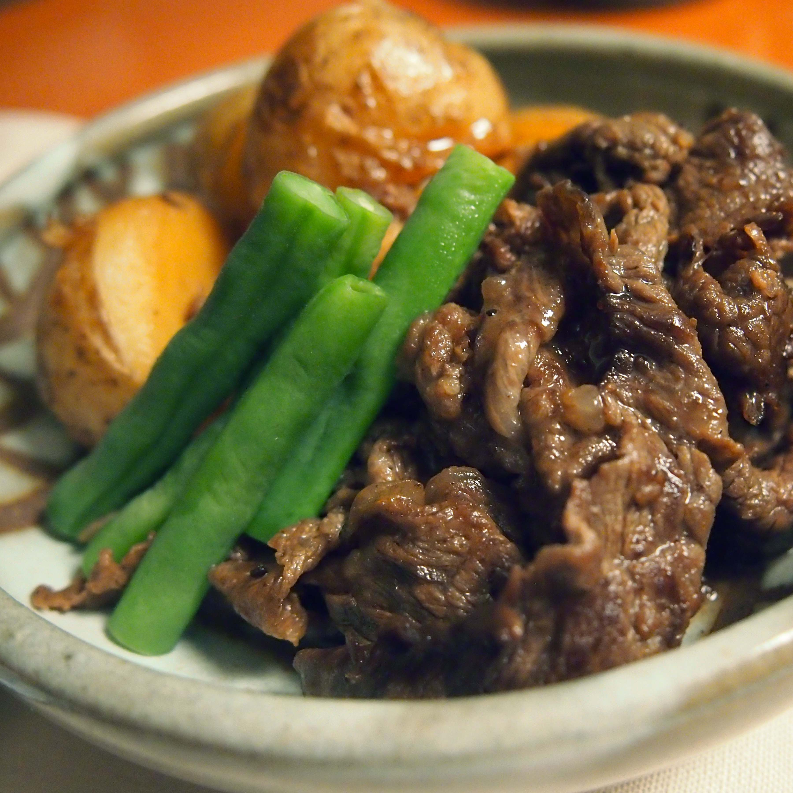

Willkommen zu den japanischen Menüs
Gyoza

Gyoza Hülle (gibt´s auch im Asia-shop) 2 Tassen Mehl in einer Schüssel mit 1/4 Teelöffel Salz verrühren. 1/2 Tasse kochendes Wasser hinzugeben und gut mischen. Forme eine Kugel daraus und lass diese mit einem nassen Tuch bedeckt in der Schüssel eine Stunde liegen.
Den Teig zu einer langen Wurst rollen und 40 gleich große Teigstücke abschneiden. Forme jedes der Teigstücke in eine Teigscheibe mit 5 cm Durchmesser und bestäube sie mit Mehl damit sie nicht mehr kleben. Staple die Scheiben und wickle sie in eine Frischhaltefolie bis die Füllung vorbereitet ist. Man kann sie gut im Kühlschrank aufbewahren.
ixquickSukiyaki

Zutaten für einen Topf:
Sukiyaki Sauce: 100 ml Sake, 50 ml Mirin (süßer Reiswein), 50 ml Soja Sauce, 2 El Zucker
Rindfleisch und Eier, Weißkohl, Lauch, Shunginku (essbare Chrysanthemen), Shiitake Pilze, Itokonyku
Soße:
Sake, Mirin und Soja Sauce mit Zucker in einem Topf mischen, kurz aufkochen lassen, um den Alkohol verdampfen zu lassen.
1. Schneide Rindfleisch, Chinakohl, Shiitake (ohne Stängel), Tofu, in Würfel geschnitten, Lauch dünn geschnitten usw.
2. Rindfleisch mit Sukiyake Sauce anbraten, Chinakohl mit Tofu kochen, den Rest hinzufügen (Itokonyaku nicht neben Rindfleisch plazieren)
und mit Sukiyakisoße beträufeln.
Ein paar Minuten in geschlossenem Topf köcheln lassen (nicht umrühren, sondern die einzelnen
Zutaten sortiert im Topf lassen). Bei Bedarf noch Udon-Nudeln hinzufügen.
Traditioell isst man Sukiyaki indem man das Essen in ein rohes Ei tunkt.
Butaman Ju

Für 8 Stück: 150 g Mehl, 75 ml Wasser (lauwarm), 10g Hefe, 3 Tl Zucker, 1 Prise Salz
Für die Füllung: 150 g Hackfleisch, 100 g Weißkohl, 3 cm Ingwer, 2 getr. Shiitake, 2 Zehen Knoblauch,2 EL Sojasauce, 1 EL Sake, 1 El Stärke
1 Tl Zucker und Pfeffer
1. Die Shiitake in 200 ml lauwarmem Wasser eine halbe Stunde einweichen. (Wer frische benutzt, kann diese Schritte natürlich weglassen
.)
2. Zucker und Hefe ins Wasser geben und gut verrühren. Mehl und Salz in einer Teigschüssel vermischen. Nach und nach das Hefewasser
hineingebe und mit dem Mehl zu einem geschmeidigen Teig verkneten. Den Teig zu einer Kugel formen und mit einem sauberen Handtucgh
zugedeckt in der Teigschüssel an einem warmen Ort eine halbe Stunde gehen lassen.
3. In der Zwischenzeit den Kohl in feine, 4 cm lange Streifen schneiden. Ingwer und Knoblauch schälen und fein hacken.
Von den Shiitake den Stiel abschneiden und wegwerfen, die Hüte in dünne, kurze Streifen schneiden.
4. Alle Zutaten für die Füllung miteinander verkneten und zu 8 Kugeln formen.
5. Den Teig nochmal kurz durchkneten und in 8 Teile teilen. Jedes Teigstück zu einem Kreis mit 10 cm Durchmesser ausrollen.
Jeweils eine Kugel von der Füllung auf die Mitte setzen und wie unten gezeigt einrollen. Aus Backpapier 8 ausreichend große quadrate
ausschneiden und jeweils einen Nikuman draufsetzen. Nikuman mit genügend Abstand zu einander in einen Mushiki (Bambusdämpfer) setzen.
6. In einem Topf einen Liter Wasser auf hoher Stufe zum Kochen bringen. Wenn das Wasser kocht, den Deckel abnehmen und den Mushiki mit den
Nikuman draufsetzen. Für 15 Minuten dämpfen.
Okonomiyaki

Okonomiyaki nach Hiroshima-Art
Zutaten für 2 Portionen: 80g Mehl, 100ml Dashi, 8cm chin. Yamswurzel, 3 Eier, 100g Weißkohl, 90 g Garnelen, 75g Chuka Soba (Sobanudeln)
oder Udon (Udonnudeln), 4 Scheiben Speck, 1 Frühlingszwiebel, Bulldogsoße, Mayonnaise, Aonori (Seetangpulver), Bonitoflocken (Katsuobushi, getrocknete Fischflocken), Agedama (frittierte Teigflocken)
1. Den Kohl in feine Streifen schneiden und zur Seite stellen. Die Nudeln nach Packungsanweisung kochen, zur Seite stellen.
2. In einer Schüssel Mehl, Ei und (kaltes) Dashi verrühren. Die Yamswurzel schälen und in den Teig hineinreiben. Alles gut zu einem glatten Teig vermischen.
3. Den Teppan auf ca. 160 Grad erhitzen. Eine Kelle Teig auf den Teppan geben, zu einem dünnen Kreis ausbreiten und die Hälfte des Kohls darauf legen. Dann die Hälfte der Garnelen auf dem Kohl verteilen. Zuletzt die zweite Hälfte des Teigs verteilen.Soviel Teig über die Garnelen und den Kohl geben, dass noch die Hälfte der ursprünglichen Menge übrig bleibt. Zwei Scheiben Speck auf das Okonomiyaki legen.
4. Die Okonomiyaki 3 bis 5 Minuten auf einer Seite ausbacken. Dann das Ganze wenden. Nach dem Wenden weitere 3 bis 5 Minuten backen. In der Zwischenzeit auf einer freien Stelle des Teppan die Hälfte der gekochten Nudeln mit einem Eßlöffel Sosu geben. Etwa zwei Minuten unter Wenden anbraten. Schließlich die Nudeln zu einem Kreis, der den gleichen Durchmesser wie das Okonomiyaki hat, ausbreiten. Das Okonomiyaki auf das Nudelbett heben.
5. Das Onomiyaki iwei Minuten braten lassen. Ein Ei neben dem Okonomiyaki auf den Teppan schlagen. Das Eigelb mit Kochstäbchen aufreißen und kurz mit dem Eiweiß vermischen. Noch kurz bevor das Ei komplett gestockt ist, das Okonomiyaki auf das Ei heben. Die Reihenfolge der Schichten isst nun von unten nach oben wie folgt: Ei - Nudeln - Speck - Teig- Garnelen - Kohl - Teig.
6. Den Teppan ausschalten. Das Okonomiyaki eine weiter Minute backen lassen. Ein letztes Mal wenden, so dass die Seite mit dem Ei nun oben ist. Das Okonomiyaki auf einen Teller heben und mit Sosu, Mayonnaise, Aonor, Agedama, Frühlingszwiebelringen, und Bonitoflocken garnieren.
Für das zweikt Okonomiyaki die Punkte 3 bis 6 wiederholen.
Okonomiyaki nach Kansai Art
Zutaten für 2 Porionen:
100g Mehl, 80ml Wasser, 1 Ei, 8cm chin. Yamswurzel, 100g Weißkohl, 70g Garnelen, 1 Frühlingszwiebel, Sosu (Bolldogsoße), Mayonnaise, Katsuobushi
1. Mehl, Wasser und Ei in einer Schüssel verrühren. Die Yamswurezl schälen und hinenreiben.Gut verrühren.
2. Den Kohl in feine Streifen und die Frühlingszwiebel in Ringe schneiden. Zusammen mit den Garnelen in den Teig geben und verrühren.
3. Den Teig in zwei Portionen auf den Teppan geben und 5 - 7 Minuiten von einer Seite backen. Anschließend wenden und weitere 5 Minuten backen.
4. Die Okonomiyaki auf einen Teller gleiten lassen, mit der japanischen Worcestersauce und Mayonnaise bestreichen und mit Bonitoflocken bestreuen.
Karaage

Zutaten für 2 Personen:
200g Hühnerbrust, 2cm Ingwer, 2 El Sojasauce, 1 El Mirin, 2 El Klebereismehl, 1 El Kartoffelmehlstärke, 1/2 El Öl zum Frittieren
1. Ingwer schälen und feinreiben.
2. Das Fleisch in mundgerechte Stücke schneiden und in eine Schüssel legen. Sojasauce, Ingwer und Mirin verrühren, über das Hühnerfleisch geben und miteinander vermischen. Für 30-45 Minuten marinieren lassen.
3. In einem Wok oder Topf ds Öl auf mittlerer Hitze erhitzen. Wenn man ein Holzstäbchen ins Öl hält und daran sofort Bläschen aufsteigen, ist das Öl heiß genug.
4. Stärke und Klebereismehl vermischen. Die marinierten Hühnerstückchen darin weden, so dass sie gut mit dem Stärke-Mehl-Gemisch bedeckt sind und ins heiße Öl geben. Ausbacken bis sie knusprig braun sind.
5. Die fertigen Stückchen auf etwas Küchenpapier abtropfen lassen. Anschließend auf zwei Tellern anrichten und mit je einer Zitronenspalte servieren.
Tempura

Zutaten für 2 Personen:
2 Riesengarnelen, 1 Süßkartoffel, 1 Paprika, 1 Karotte, 1 Eigelb, 100g Reismehl, 100ml Eiswasser, Öl zum Frittieren
Für den Dip:
100ml Dashi, 4 EL Sojasauce, 4 El Mirin
Außerdem:
Tsukemono (in Salz eingelegtes Gemüse wie z.B. Karotten, Gurken, Rettich), 10cm Rettich, 2x Misosuppe, 2x gekochter Reis
1. Den Rettich auf einer Ingwerreibe zu feinem Mus zerreiben. Beiseite stellen.
2. Öl in einem Topf, einer großen Pfanne osder Fritteuse erhitzen.(Wenn man einen Zahnstocher in das Öl hält und Bläschen daran aufsteigen, ist die Temperatur optimal. (Wenn das Öl anfängt zu qualmen ist es zu heiß.)
3. Die Zutaten für den Dip in einem kleinen Topf auf mittlerer hitze erwärmen. Für drei Minuten köcheln lassen. Vom Herd nehmen und beiseite stellen.
4. Das Gemüse waschen und in mundgerechte Stücke bzw. Scheiben schneiden. Die Stücke nach Gemüsesorte in je ein Blatt Küchenpapier einwickeln, damit die Oberfläche trocknen kann.
5. Den Kopf und Panzer - bis auf den hintersten Teil des Schwanzes - der Garnelen entfernen. Auf der Oberseite der Länge nach aufschneiden und den Darm entfernen. Am hinteren Ende direkt vor dem Panzerrest quer einschneiden und die Seiten der Garnelen "aufklappen".
6. 30g Klebereismehl auf einen Teller geben. Das Gemüse und die Garnelen dawrin wenden, sodass die Oberfläche dünn mit Klebereismehl bestäubt ist.
7. Den Tempura-Teig direkt vor dem Fritieren zubereiten. Das Eigelb in eine Schüssel geben, mit einem Schneebesen kurz verrühren. Dann die übrigen 70g Reismehl auf ein Mal zu der Ei-Wasser-Mischung geben und nur ein paar Sekunden umrühren.Bei japanischem Tempura ist es wichtig, dass Mehl und Wasser nur ganz wenig gemischt werden. Klümpchen im Teig sind erwünscht. Das gibt dem Tempura seine einzigartige Textur.
8. Das Gemüse in den Teig tauchen und portionsweise im heißen Fett ausbacken. Danach die Garnelen genauso frittieren. (Wer mag, kann sie aber auch vor dem Frittieren im Pfannkochtopf wenden) Anschließend mit der Schaumkelle herausholen und auf Küchenpapier abtropfen lassen.
9. Das Tempura zusammen mit dem Dip, Reis, der Misosuppe, Tsukemono und dem geriebenen Rettisch servieren.
Ramen

Zutaten:
1 EL Sesamöl,
1 Schalotte(n) in feinen Ringen,
1 Knoblauchzehe(n), fein gehackt,
100 g Shiitake-Pilze in Streifen geschnitten,
1 Chilischote(n), grün, entkernt, fein gehackt,
1 Stängel Zitronengras, das Innere, fein gehackt,
1 Liter Gemüsebrühe,
3 EL Sojasauce, helle,
150 g Nudeln (Ramen)
100 g Chinakohl, in feinen Streifen,
etwas Koriander
Nikujaga
Zutaten
Rindfleisch, in dünnen Scheiben
Süßkartoffel(n)
Karotte(n)
Gemüsezwiebel(n)
Sojasauce
Worcestersauce
Knoblauch, gehackt
Bier
Wasser, heißes
Dashi
Zucker
Salz und Pfeffer
Zubereitung
Arbeitszeit: ca. 15 Min. / Koch-/Backzeit: ca. 30 Min. / Schwierigkeitsgrad: normal / Kalorien p. P.: keine Angabe
Zunächst das Fleisch in etwa 1 cm lange Streifen schneiden. Die Kartoffeln und die Möhren nicht zu klein würfeln, die Zwiebel ebenfalls in breitere Streifen schneiden.
Etwas Öl in einer tiefen Pfanne erhitzen und das Fleisch mit dem Knoblauch anbraten, dabei etwas salzen und pfeffern. Mit der Soja- und der Worcestersauce ablöschen und das restliche Gemüse hinzufügen. Alles gut vermischen und wiederum mit dem Bier ablöschen. Im heißen Wasser das Dashi auflösen und zusammen mit dem Zucker in die Pfanne geben.
Das Ganze nun bei mittlerer Hitze kochen, bis die Kartoffeln gar sind und sich die Flüssigkeit zu einer sämigen Soße reduziert hat (ca. 15 Minuten).
Nikujaga (von niku = Fleisch und Jagaimo = Kartoffel) gehört zur bodenständigen japanischen Küche und wird normalerweise mit Reis serviert. Meine "deutsche" Variante - gemäß dem in Japan weitverbreiteten Klischee, wir Deutschen verwenden Bier wie Wasser - ergibt einen herzhaften Eintopf, den man auch gut alleinstehend essen kann.